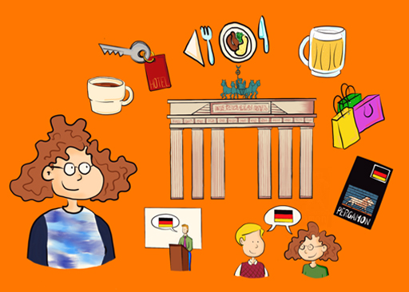

3 What does success look like for you?¶
So, you have seen that language learning is a bit like running a marathon. And it is certainly a marathon, and not a sprint, in the sense that language proficiency will take time to achieve, especially if this is the first time you have set about learning a foreign language.
It is well known that, as well as the importance of their physical training, for athletes to succeed they also need to stay on top of their game mentally. One thing that athletes do to enhance their performance is to use visualisation techniques, imagining themselves completing a race, or stepping onto the podium.
As Angie LeVan of the Clinical Research Unit at the University of Pennsylvania Abramson Cancer Center explains:
Mental imagery impacts many cognitive processes in the brain: motor control, attention, perception, planning, and memory. So the brain is getting trained for actual performance during visualization. It’s been found that mental practices can enhance motivation, increase confidence and self-efficacy, improve motor performance, prime your brain for success, and increase states of flow – all relevant to achieving your best life! Reference: (LeVan, 2009)
Visualisation techniques have also been shown to be important in language learning. According to Professor Zoltan Dörnyei, a leading researcher on motivation and language learning, ‘a particularly effective way of motivating learners is to enable them to create an attractive vision of their future language self’ (2013, p. 5).
According to Dörnyei, an effective way to enhance your motivation as a learner is to imagine yourself as you will be once you have achieved your goal, just like athletes do. He recommends visualising what success in learning the language you are studying looks like for you.
Figure 4 shows what success in learning German, the language I am currently studying, looks like for me.

Figure 4 Tita imagining her trip to Berlin
Box 1 Tita’s ideal future German self¶
I have just started to learn German. I am planning to visit Berlin next year. I visited last year for a conference, and did not really speak any German then. I would like to return next year, and I can imagine myself arriving at the Hauptbahnhof, and stopping for a coffee on my way to the hotel. I imagine getting to the hotel, being greeted by the receptionist, and being able to ask for my room in German. I will also enjoy being able to speak German when I go back to the nice restaurant I went to in my last visit, and to order a beer at the terrace by the river. I will also be able to talk to people in the shops, rather than rely on English for everything. If I have time, I will also visit the Pergamon museum, which I didn’t have time to visit last time, and I will get a German guide and try to read that, rather than an English one.
I can also imagine attending some of the conference talks in German, and talking to colleagues about the topic of the conference, which is language learning, in German. I will also see some of the people I met last year, and it will be great to chat to them in German about what they have been doing. I imagine speaking fairly fluently to people in the hotel, shops and restaurants. I think they will be pleased to see that I make the effort to speak in German, although some might reply in English (people always do that). I think my colleagues at the conference will be pleased that I have learned some German although they will also want to speak other languages.